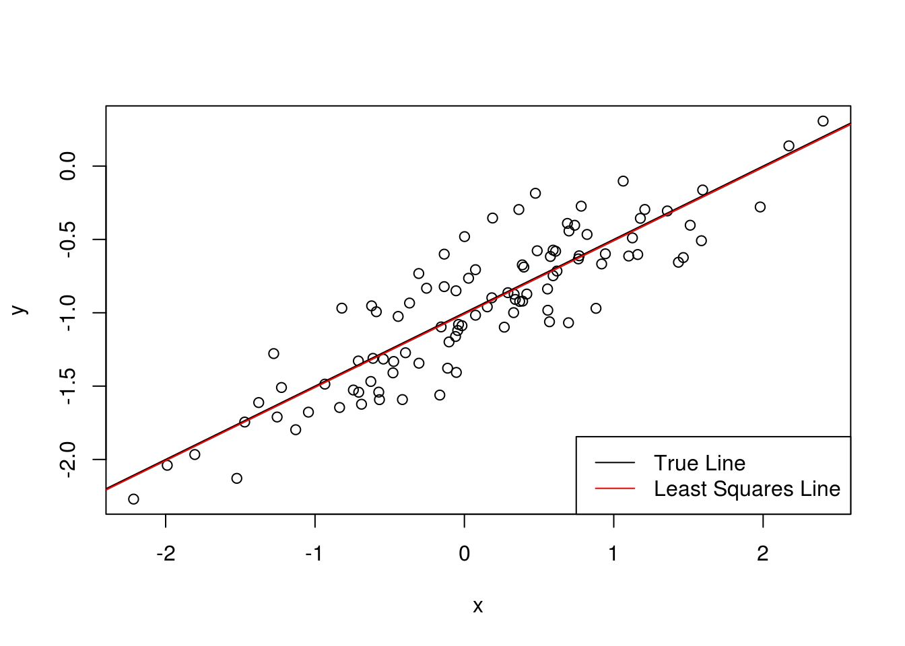

Chapter 3 Linear Regression
The first null hypothesis, related to the
interceptterm stats that we can conclude thatsaleswill not be zero if we spend no money on TV, radio, or newspaper advertisting. The rest of the null hypotheses test whether TV, radio, or newspaper have any effect on sales. From theInterceptp-value, we can conclude that if we spend no money on advertising, we would expect to some sales. The second and third p-values state that if we spend money or TV and radio, we can expect some sort of return on investment in terms of sales. From thenewspaperp-value, we cannot reject the null hypothesis that radio has no effect on sales.The KNN classifier attempts to fit the \(Y\) into some set of categories. For example, if we have the MPG, weight, and horsepower of a car, we might try to determine if it is a SUV, sedan, sports car, etc. KNN regression attempts to try and guess some quantitative values from the neighbors of a given point. For example, if we had the height and gender of someone, we can guess their weight by trying to find the \(k\) nearest neighbors in a height \(\times\) gender and average the \(k\) weight values to come up with a best guess for the weight of the someone.
- Our equation would look like \[ 50+20X_1 + 0.7X_2 + 35 X_3 + 0.01X_1 X_2 - 10 X_1 X_3.\] To figure out when females earn more, we check \[50+20X_1 + 0.7X_2 + 35 + 0.01X_1 X_2 - 10 X_1 > 50+20X_1 + 0.7X_2 + 0.01X_1 X_2 \] \[ -10X_1 +35 > 0\] \[ X_1 < 3.5 \] In otherwords, in order for women to have a higher salary, they need to have a GPA of less than 3.5, so iii. is the correct answer.
- We can use R to calculate this.
x1 <- 4.0; x2 <- 110; x3 <- 1; (50 + 20 * x1 + .7 * x2 + 35*x3 + 0.01*x1*x2 - 10 * x1*x3 )
Or about $206,000.## [1] 206.4- False. If the standard error for \(\beta_4\) is very small (\(<.0001\) for example), then the t-statistics will be very large giving a large p-value. We cannot say anything about the evidence of an interaction without the p-value.
- We would expect the cubic regression to have a lower RSS. Note that if we set \(\beta_2=0\) and \(\beta_3=0\), then we get the linear regression model. Thus, if the linear regression model had a lower RSS, then we wouldn’t have gotten the least squares fit of cubic model. This is a contradiction, so we have that the cubic model must have a lower RSS.
- We would expect that the test RSS to be lower for the linear regression model. The cubic model would have fit to noise, and therefore would have higher variance.
- We would still expect the training RSS to be lower for the cubic polynomial.
- There is not enough information to tell. For example, maybe it is linear for the most part, but curves slightly at one end of the data set. Then we would expect the linear model to perform very well except for maybe some bias towards the end. The cubic regression would still overfit on the bulk of the data, but capture this tiny curve at the end well, but overall would be worse. On the other hand, we could have a truly cubic relationship between \(X\) and \(Y\).
- \[\begin{align*}
\hat{y}_i &= x_i \hat{\beta} \\
&= x_i \left(\sum_{j=1}^n x_{j}y_j \right) / \left(\sum_{i'=1}^n x_{i'}^2 \right) \\
&= \sum_{j=1}^n \left( \frac{x_i x_j }{\sum_{i'=1}^n x_{i'}^2} \right) y_j \\
&= \sum_{j=1}^n a_j y_j
\end{align*}\]
where \(a_j = \frac{x_i x_j }{\sum_{i'=1}^n x_{i'}^2}\).
Our least squares line is \(\hat{y} = \hat{\beta}_0 + \hat{\beta}_1 x = \bar{y} - \hat{\beta}_1 \bar{x} + \hat{\beta}_1 x\). If we plug in \(\bar{x}\) for \(x\), we get \(\hat{y} = \bar{y} - \hat{\beta}_1 \bar{x} + \hat{\beta}_1 \bar{x} = \bar{y}\). This means \((\bar{x},\bar{y})\) satisfies our equation, so the line passes through it.
This will take a lot of math. Maybe another time.
Lab Exercises.
data(Auto,package="ISLR")
head(Auto)## mpg cylinders displacement horsepower weight acceleration year origin
## 1 18 8 307 130 3504 12.0 70 1
## 2 15 8 350 165 3693 11.5 70 1
## 3 18 8 318 150 3436 11.0 70 1
## 4 16 8 304 150 3433 12.0 70 1
## 5 17 8 302 140 3449 10.5 70 1
## 6 15 8 429 198 4341 10.0 70 1
## name
## 1 chevrolet chevelle malibu
## 2 buick skylark 320
## 3 plymouth satellite
## 4 amc rebel sst
## 5 ford torino
## 6 ford galaxie 500a.
```r
mpg_mod <- lm(mpg ~ horsepower, data=Auto)
summary(mpg_mod)
```
```
##
## Call:
## lm(formula = mpg ~ horsepower, data = Auto)
##
## Residuals:
## Min 1Q Median 3Q Max
## -13.5710 -3.2592 -0.3435 2.7630 16.9240
##
## Coefficients:
## Estimate Std. Error t value Pr(>|t|)
## (Intercept) 39.935861 0.717499 55.66 <2e-16 ***
## horsepower -0.157845 0.006446 -24.49 <2e-16 ***
## ---
## Signif. codes: 0 '***' 0.001 '**' 0.01 '*' 0.05 '.' 0.1 ' ' 1
##
## Residual standard error: 4.906 on 390 degrees of freedom
## Multiple R-squared: 0.6059, Adjusted R-squared: 0.6049
## F-statistic: 599.7 on 1 and 390 DF, p-value: < 2.2e-16
```
i. We see that the response has a p-value that is extremely small, so we reject the null hypothesis that `horsepower` does not influence `mpg`.
ii. The $R^2$ is .6095 indicating that the relationship is moderate. The RSE is almost 5, so we could expect to be off by about 5 MPGs.
iii. Negative.
iv.
```r
ans<-sapply(c("confidence","prediction"), function(x) predict(mpg_mod,data.frame(horsepower=98),interval=x))
rownames(ans)<-colnames(predict(mpg_mod,data.frame(horsepower=98),interval="prediction"))
ans
```
```
## confidence prediction
## fit 24.46708 24.46708
## lwr 23.97308 14.80940
## upr 24.96108 34.12476
```
b.
```r
plot(Auto$horsepower,Auto$mpg)
abline(mpg_mod)
```
<img src="ISLR-exercises_files/figure-html/unnamed-chunk-20-1.png" width="672" />
c. From the plots below, we can see that there is a clear non-linearity to the residual line versus the fitted values. It has a curve remniscient of the residuals from the `sales` example. In addition, this affects the normal QQ plot where we can see we have residuals that are too large and too small.
```r
plot(mpg_mod)
```
<img src="ISLR-exercises_files/figure-html/unnamed-chunk-21-1.png" width="672" /><img src="ISLR-exercises_files/figure-html/unnamed-chunk-21-2.png" width="672" /><img src="ISLR-exercises_files/figure-html/unnamed-chunk-21-3.png" width="672" /><img src="ISLR-exercises_files/figure-html/unnamed-chunk-21-4.png" width="672" />pairs(Auto)cor(Auto[,!(names(Auto) %in% c("name"))])## mpg cylinders displacement horsepower weight ## mpg 1.0000000 -0.7776175 -0.8051269 -0.7784268 -0.8322442 ## cylinders -0.7776175 1.0000000 0.9508233 0.8429834 0.8975273 ## displacement -0.8051269 0.9508233 1.0000000 0.8972570 0.9329944 ## horsepower -0.7784268 0.8429834 0.8972570 1.0000000 0.8645377 ## weight -0.8322442 0.8975273 0.9329944 0.8645377 1.0000000 ## acceleration 0.4233285 -0.5046834 -0.5438005 -0.6891955 -0.4168392 ## year 0.5805410 -0.3456474 -0.3698552 -0.4163615 -0.3091199 ## origin 0.5652088 -0.5689316 -0.6145351 -0.4551715 -0.5850054 ## acceleration year origin ## mpg 0.4233285 0.5805410 0.5652088 ## cylinders -0.5046834 -0.3456474 -0.5689316 ## displacement -0.5438005 -0.3698552 -0.6145351 ## horsepower -0.6891955 -0.4163615 -0.4551715 ## weight -0.4168392 -0.3091199 -0.5850054 ## acceleration 1.0000000 0.2903161 0.2127458 ## year 0.2903161 1.0000000 0.1815277 ## origin 0.2127458 0.1815277 1.0000000- I turn the origin into a factor variable since that it is what it is meant to be.
Auto2 <- Auto Auto2$origin <- factor(Auto$origin) mpg_all<-lm(mpg ~ .-name, data=Auto2) summary(mpg_all)## ## Call: ## lm(formula = mpg ~ . - name, data = Auto2) ## ## Residuals: ## Min 1Q Median 3Q Max ## -9.0095 -2.0785 -0.0982 1.9856 13.3608 ## ## Coefficients: ## Estimate Std. Error t value Pr(>|t|) ## (Intercept) -1.795e+01 4.677e+00 -3.839 0.000145 *** ## cylinders -4.897e-01 3.212e-01 -1.524 0.128215 ## displacement 2.398e-02 7.653e-03 3.133 0.001863 ** ## horsepower -1.818e-02 1.371e-02 -1.326 0.185488 ## weight -6.710e-03 6.551e-04 -10.243 < 2e-16 *** ## acceleration 7.910e-02 9.822e-02 0.805 0.421101 ## year 7.770e-01 5.178e-02 15.005 < 2e-16 *** ## origin2 2.630e+00 5.664e-01 4.643 4.72e-06 *** ## origin3 2.853e+00 5.527e-01 5.162 3.93e-07 *** ## --- ## Signif. codes: 0 '***' 0.001 '**' 0.01 '*' 0.05 '.' 0.1 ' ' 1 ## ## Residual standard error: 3.307 on 383 degrees of freedom ## Multiple R-squared: 0.8242, Adjusted R-squared: 0.8205 ## F-statistic: 224.5 on 8 and 383 DF, p-value: < 2.2e-16i. We can see the F-statistic is very large which indicates that there is a relationship between response and predictor. ii. It appears that the intercept, `displacement`, `weight`, `year`, and `origin` are all statistically significant at pretty low confidence levels. It is interesting to see that `horsepower` has a low p-value. This is because `horsepower` is highly colinear with `displacement` and `weight`. iii. The coefficient for the year variable is positive indicating that cars have gotten more gas efficient over the years.- Looking at the diagnostic plots, we can see that mpg has a nonlinear trend after fitting the data. In addition, we see that some of the residuals have extremely large standardized residuals which seems to violate heteroscedascity. These large values appear towards the right side of the residuals vs fitted plot creating a funnel shape. In addition, we have a one (two?) high leverage points.
plot(mpg_all)- I (somewhat arbitrarily) chose to interact origin and year, and then horsepower with weight.
mpg_int<-lm(mpg ~ .-name + origin*year + horsepower*weight, data=Auto2) summary(mpg_int)## ## Call: ## lm(formula = mpg ~ . - name + origin * year + horsepower * weight, ## data = Auto2) ## ## Residuals: ## Min 1Q Median 3Q Max ## -8.5007 -1.7339 -0.0269 1.4737 12.0826 ## ## Coefficients: ## Estimate Std. Error t value Pr(>|t|) ## (Intercept) 1.107e+01 5.271e+00 2.099 0.036443 * ## cylinders -8.323e-02 2.834e-01 -0.294 0.769149 ## displacement 6.615e-03 6.870e-03 0.963 0.336254 ## horsepower -2.207e-01 2.354e-02 -9.375 < 2e-16 *** ## weight -1.108e-02 7.240e-04 -15.301 < 2e-16 *** ## acceleration -9.228e-02 8.735e-02 -1.056 0.291453 ## year 6.661e-01 5.934e-02 11.226 < 2e-16 *** ## origin2 -3.006e+01 9.122e+00 -3.295 0.001075 ** ## origin3 -1.326e+01 8.448e+00 -1.570 0.117250 ## year:origin2 4.158e-01 1.194e-01 3.483 0.000553 *** ## year:origin3 1.918e-01 1.087e-01 1.765 0.078382 . ## horsepower:weight 5.261e-05 5.207e-06 10.104 < 2e-16 *** ## --- ## Signif. codes: 0 '***' 0.001 '**' 0.01 '*' 0.05 '.' 0.1 ' ' 1 ## ## Residual standard error: 2.88 on 380 degrees of freedom ## Multiple R-squared: 0.8677, Adjusted R-squared: 0.8639 ## F-statistic: 226.6 on 11 and 380 DF, p-value: < 2.2e-16It appears I may have gotten a little lucky with my choices! It appears that there is a strong interaction between year and origin2, which means European cars and year interact pretty well. In addition, the interaction with horsepower and weight ended up pretty significant. The model also managed to get diminished the non-linear effect on the residuals, but we still got the conical effect of the residuals growing vs the fitted values.plot(mpg_int)- I’m going to remove the high leverage point because it got a little ridiculous how much leverage it has. I compare the mpg against the inverse of horsepoewr and inverse of weight and its interaction. The result is that they come out statistically significant.
mpg_int<-lm(mpg ~ .-name + origin*year + I(1/horsepower)*I(1/weight), data=Auto2[-14,]) summary(mpg_int)## ## Call: ## lm(formula = mpg ~ . - name + origin * year + I(1/horsepower) * ## I(1/weight), data = Auto2[-14, ]) ## ## Residuals: ## Min 1Q Median 3Q Max ## -9.0949 -1.4561 0.0835 1.3558 12.0946 ## ## Coefficients: ## Estimate Std. Error t value Pr(>|t|) ## (Intercept) -1.063e+02 1.769e+01 -6.011 4.35e-09 *** ## cylinders 5.366e-02 3.116e-01 0.172 0.8634 ## displacement -9.979e-05 7.448e-03 -0.013 0.9893 ## horsepower 9.155e-02 2.311e-02 3.962 8.90e-05 *** ## weight 3.087e-03 1.478e-03 2.088 0.0374 * ## acceleration -2.058e-01 1.004e-01 -2.051 0.0410 * ## year 6.824e-01 5.872e-02 11.620 < 2e-16 *** ## origin2 -2.224e+01 9.264e+00 -2.400 0.0169 * ## origin3 -1.523e+01 8.426e+00 -1.807 0.0715 . ## I(1/horsepower) 3.572e+03 7.440e+02 4.801 2.28e-06 *** ## I(1/weight) 1.278e+05 2.550e+04 5.012 8.29e-07 *** ## year:origin2 3.051e-01 1.215e-01 2.511 0.0124 * ## year:origin3 2.136e-01 1.083e-01 1.973 0.0492 * ## I(1/horsepower):I(1/weight) -5.505e+06 1.395e+06 -3.946 9.49e-05 *** ## --- ## Signif. codes: 0 '***' 0.001 '**' 0.01 '*' 0.05 '.' 0.1 ' ' 1 ## ## Residual standard error: 2.836 on 377 degrees of freedom ## Multiple R-squared: 0.8723, Adjusted R-squared: 0.8678 ## F-statistic: 198 on 13 and 377 DF, p-value: < 2.2e-16plot(mpg_int)data(Carseats,package="ISLR") head(Carseats)## Sales CompPrice Income Advertising Population Price ShelveLoc Age ## 1 9.50 138 73 11 276 120 Bad 42 ## 2 11.22 111 48 16 260 83 Good 65 ## 3 10.06 113 35 10 269 80 Medium 59 ## 4 7.40 117 100 4 466 97 Medium 55 ## 5 4.15 141 64 3 340 128 Bad 38 ## 6 10.81 124 113 13 501 72 Bad 78 ## Education Urban US ## 1 17 Yes Yes ## 2 10 Yes Yes ## 3 12 Yes Yes ## 4 14 Yes Yes ## 5 13 Yes No ## 6 16 No Yessales_mod <- lm(Sales ~ Price + Urban + US, data=Carseats) summary(sales_mod)## ## Call: ## lm(formula = Sales ~ Price + Urban + US, data = Carseats) ## ## Residuals: ## Min 1Q Median 3Q Max ## -6.9206 -1.6220 -0.0564 1.5786 7.0581 ## ## Coefficients: ## Estimate Std. Error t value Pr(>|t|) ## (Intercept) 13.043469 0.651012 20.036 < 2e-16 *** ## Price -0.054459 0.005242 -10.389 < 2e-16 *** ## UrbanYes -0.021916 0.271650 -0.081 0.936 ## USYes 1.200573 0.259042 4.635 4.86e-06 *** ## --- ## Signif. codes: 0 '***' 0.001 '**' 0.01 '*' 0.05 '.' 0.1 ' ' 1 ## ## Residual standard error: 2.472 on 396 degrees of freedom ## Multiple R-squared: 0.2393, Adjusted R-squared: 0.2335 ## F-statistic: 41.52 on 3 and 396 DF, p-value: < 2.2e-16plot(sales_mod)- The diagnostic plots look pretty good but the model isn’t very good. The price coefficient says that we can expect less units to sell at a higher prince. No surprise there. The urban coefficient would suggest that we sell slightly less in an urban location, but the p-value on this is extremely large, so we can safely dismiss this coefficient. The location being within the US is very important to sales.
- I’m not sure what the point of this question is \[ \mathrm{Sales} = 13.0 - 0.0544X_1 - 0.0219X_2 + 1.20 X_3\] where \(X_1\) is the Price, \(X_2\) is 1 if we are in an Urban setting, and \(X_3\) is 1 if we are in the United States.
- We can reject the null-hypothesis safely for
Price,USYes.
sales_mod2 <- lm(Sales ~ Price + US, data=Carseats) summary(sales_mod2)## ## Call: ## lm(formula = Sales ~ Price + US, data = Carseats) ## ## Residuals: ## Min 1Q Median 3Q Max ## -6.9269 -1.6286 -0.0574 1.5766 7.0515 ## ## Coefficients: ## Estimate Std. Error t value Pr(>|t|) ## (Intercept) 13.03079 0.63098 20.652 < 2e-16 *** ## Price -0.05448 0.00523 -10.416 < 2e-16 *** ## USYes 1.19964 0.25846 4.641 4.71e-06 *** ## --- ## Signif. codes: 0 '***' 0.001 '**' 0.01 '*' 0.05 '.' 0.1 ' ' 1 ## ## Residual standard error: 2.469 on 397 degrees of freedom ## Multiple R-squared: 0.2393, Adjusted R-squared: 0.2354 ## F-statistic: 62.43 on 2 and 397 DF, p-value: < 2.2e-16- We see that the two models have really low \(R^2\), so fit the data not very well.
confint(sales_mod2)## 2.5 % 97.5 % ## (Intercept) 11.79032020 14.27126531 ## Price -0.06475984 -0.04419543 ## USYes 0.69151957 1.70776632- From the book we don’t want our leveraget o be too much larger than \((p+1)/n = (2+1)/400 = .0075\). There is one observation that exceeds this by a lot, but its standarized residual isn’t very large. As far as I can tell, the most problematic observation is possibly 368.
plot(sales_mod2,5)
set.seed(1)
x=rnorm(100)
y=2*x+rnorm(100);a.
```r
y_mod <- lm(y ~ x + 0)
summary(y_mod)
```
```
##
## Call:
## lm(formula = y ~ x + 0)
##
## Residuals:
## Min 1Q Median 3Q Max
## -1.9154 -0.6472 -0.1771 0.5056 2.3109
##
## Coefficients:
## Estimate Std. Error t value Pr(>|t|)
## x 1.9939 0.1065 18.73 <2e-16 ***
## ---
## Signif. codes: 0 '***' 0.001 '**' 0.01 '*' 0.05 '.' 0.1 ' ' 1
##
## Residual standard error: 0.9586 on 99 degrees of freedom
## Multiple R-squared: 0.7798, Adjusted R-squared: 0.7776
## F-statistic: 350.7 on 1 and 99 DF, p-value: < 2.2e-16
```
```r
confint(y_mod)
```
```
## 2.5 % 97.5 %
## x 1.782603 2.205149
```
We got the estimate $\hat{\beta} = 1.9939$. We can see that the 95% confidence interval contains our true slope of 2.
b.
```r
x_mod <- lm(x ~ y + 0)
summary(x_mod)
```
```
##
## Call:
## lm(formula = x ~ y + 0)
##
## Residuals:
## Min 1Q Median 3Q Max
## -0.8699 -0.2368 0.1030 0.2858 0.8938
##
## Coefficients:
## Estimate Std. Error t value Pr(>|t|)
## y 0.39111 0.02089 18.73 <2e-16 ***
## ---
## Signif. codes: 0 '***' 0.001 '**' 0.01 '*' 0.05 '.' 0.1 ' ' 1
##
## Residual standard error: 0.4246 on 99 degrees of freedom
## Multiple R-squared: 0.7798, Adjusted R-squared: 0.7776
## F-statistic: 350.7 on 1 and 99 DF, p-value: < 2.2e-16
```
```r
confint(x_mod)
```
```
## 2.5 % 97.5 %
## y 0.3496717 0.4325574
```
We get a coefficient estimate of .391 with a standard error of .02. This is far from our expected value of .5.
c. We can see that the t-statistic for both tests is the same.
d. We start with
$$ \frac{\frac{\sum_{i=1} x_i y_i}{\sum_{i'=1}^n x_{i'}^2}}{\sqrt{\frac{\sum_{i=1}^n(y_i - x_i \hat{\beta})^2}{(n-1)\sum_{i'=1}^n x_{i'}^2}}} = \frac{(\sqrt{n-1})\sum_{i=1}^n x_iy_i}{\sqrt{(\sum_{i'=1}x_{i'}^2) \sum_{i=1}^n(y_i - x_i \hat{\beta})^2}} $$
We already got what we wanted on top, so let's focus on the bottom (and drop the square root)
$$ (\sum_{i'=1}x_{i'}^2) \sum_{i=1}^n(y_i - x_i \hat{\beta})^2 = (\sum_{i'=1}x_{i'}^2) \sum_{i=1}^n y_i^2 - 2 y_i x_i \hat{\beta} + x_i^2\hat{\beta}^2 $$
Substituting $\hat{\beta} = (\sum_{i=1}^n x_i y_i) / (\sum_{i'=1}^n x_{i'}^2)$ we get
$$ (\sum_{i'=1}x_{i'}^2) \sum_{i=1}^n y_i^2 - 2 y_i x_i \frac{(\sum_{j=1}^n x_j y_j)}{(\sum_{i'=1}^n x_{i'}^2)} + x_i^2\frac{(\sum_{j=1}^n x_j y_j)^2}{(\sum_{i'=1}^n x_{i'}^2)^2} = (\sum_{i'=1}x_{i'}^2)(\sum_{i=1}^n y_i^2 ) - 2 (\sum_{i=1}^n y_i x_i)(\sum_{j=1}x_jy_j) + (\sum_{i=1}x_i^2)\frac{(\sum_{j=1}^n x_j y_j)^2}{\sum_{i'=1}x_{i'}^2} $$
Cancelling terms, we get
$$(\sum_{i'=1}x_{i'}^2)(\sum_{i=1}^n y_i^2 ) - 2 (\sum_{i=1}^n y_i x_i)(\sum_{j=1}x_jy_j) + (\sum_{i=1}x_i^2)\frac{(\sum_{j=1}^n x_j y_j)^2}{\sum_{i'=1}x_{i'}^2} = (\sum_{i'=1}x_{i'}^2)(\sum_{i=1}^n y_i^2 ) - 2 (\sum_{i=1}^n y_i x_i)^2 + (\sum_{j=1}^n x_j y_j)^2 = (\sum_{i'=1}x_{i'}^2)(\sum_{i=1}^n y_i^2 ) - (\sum_{i=1}^n y_i x_i)^2 $$
This gives us the identity we wanted.
To confirm it numerically,
```r
n<-100; xy<-sum(x*y); x2<-sum(x^2); y2<-sum(y^2)
beta<-xy/x2
sebeta<-sqrt(sum((y-x*beta)^2)/((n-1)*x2))
t1<-beta/sebeta
t2<-sqrt(n-1)*xy/sqrt(x2*y2 - xy^2)
print(c(t1,t2))
```
```
## [1] 18.72593 18.72593
```
e. We can see that the second form the t-statistic is symmetric with respect to $x$ and $y$, so there is no algebraic difference between the -statistic for `y` onto `x` and `x` onto `y`.
f.
```r
y_int <- lm(y ~ x)
x_int <- lm(x ~ y)
cbind(`y t-statistic`=coef(summary(y_int))["x","t value"],`x t-statistic`=coef(summary(x_int))["y","t value"])
```
```
## y t-statistic x t-statistic
## [1,] 18.5556 18.5556
```- Let \(\hat{\beta}_y\) be the estimate for \(\beta\) of
yontoxand \(\hat{\beta}_x\) be the estimate for \(\beta\) forxontoy. Then \[\hat{\beta}_y = \hat{\beta}_x \implies \frac{\sum_{i=1}^n (x_iy_i)}{\sum_{i'=1} x_{i'}^2} = \frac{\sum_{i=1}^n (x_iy_i)}{\sum_{i'=1} y_{i'}^2} \implies \sum_{i'=1} x_{i'}^2 = \sum_{i'=1} y_{i'}^2\] - The example from 11. has two different \(\hat{\beta}\)’s.
- The trick I do below is to create two samples. I then rescale the random
yso that the sum of squares is the same as thexvariable. This makes the two regression values the same.
set.seed(2) n <- 100 x <- rnorm(n) y <- rnorm(n) y <- y/sqrt(sum(y^2))*sqrt(sum(x^2)) #Rescaling so sum of squares is same for x and y coef(summary(lm(y~x+0)))## Estimate Std. Error t value Pr(>|t|) ## x -0.05620888 0.1003449 -0.5601569 0.5766378coef(summary(lm(x~y+0)))## Estimate Std. Error t value Pr(>|t|) ## y -0.05620888 0.1003449 -0.5601569 0.5766378- Let \(\hat{\beta}_y\) be the estimate for \(\beta\) of
set.seed(1) n <- 100 x <- rnorm(n) head(x)## [1] -0.6264538 0.1836433 -0.8356286 1.5952808 0.3295078 -0.8204684eps <- rnorm(n, sd=0.25);- The length of
yis \(n=100\).
y <- -1+.5*x+epsplot(x,y);abline(-1,.5)- The coefficient estimates are \(\hat{\beta}_0 = -1.00942\), \(\hat{\beta}_1 = 0.49973\). These are pretty close. The true values are within 1 standard error.
y_mod <- lm(y~x) summary(y_mod)## ## Call: ## lm(formula = y ~ x) ## ## Residuals: ## Min 1Q Median 3Q Max ## -0.46921 -0.15344 -0.03487 0.13485 0.58654 ## ## Coefficients: ## Estimate Std. Error t value Pr(>|t|) ## (Intercept) -1.00942 0.02425 -41.63 <2e-16 *** ## x 0.49973 0.02693 18.56 <2e-16 *** ## --- ## Signif. codes: 0 '***' 0.001 '**' 0.01 '*' 0.05 '.' 0.1 ' ' 1 ## ## Residual standard error: 0.2407 on 98 degrees of freedom ## Multiple R-squared: 0.7784, Adjusted R-squared: 0.7762 ## F-statistic: 344.3 on 1 and 98 DF, p-value: < 2.2e-16- The linear least squares line is in red. It almost perfectly overlaps the true \(f\).
plot(x,y);abline(-1,.5);abline(coef(y_mod),col="red") legend(x="bottomright", c("True Line","Least Squares Line"), col=c("black","red"), lty=c(1,1))- We can see evidence that the fit is better due to the \(R^2\) being higher. The \(R^2\) increased from 0.7784 to 0.7828.
y_quad <- lm(y ~ x+I(x^2)) summary(y_quad)## ## Call: ## lm(formula = y ~ x + I(x^2)) ## ## Residuals: ## Min 1Q Median 3Q Max ## -0.4913 -0.1563 -0.0322 0.1451 0.5675 ## ## Coefficients: ## Estimate Std. Error t value Pr(>|t|) ## (Intercept) -0.98582 0.02941 -33.516 <2e-16 *** ## x 0.50429 0.02700 18.680 <2e-16 *** ## I(x^2) -0.02973 0.02119 -1.403 0.164 ## --- ## Signif. codes: 0 '***' 0.001 '**' 0.01 '*' 0.05 '.' 0.1 ' ' 1 ## ## Residual standard error: 0.2395 on 97 degrees of freedom ## Multiple R-squared: 0.7828, Adjusted R-squared: 0.7784 ## F-statistic: 174.8 on 2 and 97 DF, p-value: < 2.2e-16- By reducing the standard deviation 5 times, we can see the \(R^2\) went up dramatically in the model.The t-values of the coefficients also went way up, so we are much more confident in our guesses for the coefficients.
set.seed(1) x <- rnorm(n,sd=.1) eps <- rnorm(n,sd=.1) y <- -1+.5*x+eps y_less <- lm(y ~ x) summary(y_less)## ## Call: ## lm(formula = y ~ x) ## ## Residuals: ## Min 1Q Median 3Q Max ## -0.18768 -0.06138 -0.01395 0.05394 0.23462 ## ## Coefficients: ## Estimate Std. Error t value Pr(>|t|) ## (Intercept) -1.003769 0.009699 -103.495 < 2e-16 *** ## x 0.498940 0.107727 4.632 1.12e-05 *** ## --- ## Signif. codes: 0 '***' 0.001 '**' 0.01 '*' 0.05 '.' 0.1 ' ' 1 ## ## Residual standard error: 0.09628 on 98 degrees of freedom ## Multiple R-squared: 0.1796, Adjusted R-squared: 0.1712 ## F-statistic: 21.45 on 1 and 98 DF, p-value: 1.117e-05plot(x,y);abline(-1,.5);abline(coef(y_less),col="red") legend(x="bottomright", c("True Line","Least Squares Line"), col=c("black","red"), lty=c(1,1))Now for the qudratic model.
y_less_q <- lm(y ~ x + I(x^2)) summary(y_less_q)
We see that the \(R^2\) is basically the same as the linear model, suggesting that there was no improvement. In fact, the adjusted \(R^2\) is lower by .0001, so this model is worse by that standard.## ## Call: ## lm(formula = y ~ x + I(x^2)) ## ## Residuals: ## Min 1Q Median 3Q Max ## -0.19650 -0.06254 -0.01288 0.05803 0.22700 ## ## Coefficients: ## Estimate Std. Error t value Pr(>|t|) ## (Intercept) -0.99433 0.01177 -84.512 < 2e-16 *** ## x 0.51716 0.10798 4.789 6.01e-06 *** ## I(x^2) -1.18921 0.84766 -1.403 0.164 ## --- ## Signif. codes: 0 '***' 0.001 '**' 0.01 '*' 0.05 '.' 0.1 ' ' 1 ## ## Residual standard error: 0.0958 on 97 degrees of freedom ## Multiple R-squared: 0.1959, Adjusted R-squared: 0.1793 ## F-statistic: 11.82 on 2 and 97 DF, p-value: 2.557e-05- I set \(\sigma\) to 1.
set.seed(1) x <- rnorm(n) eps <- rnorm(n,sd=1) y2 <- -1+.5*x+eps y_more <- lm(y2 ~ x) summary(y_more)## ## Call: ## lm(formula = y2 ~ x) ## ## Residuals: ## Min 1Q Median 3Q Max ## -1.8768 -0.6138 -0.1395 0.5394 2.3462 ## ## Coefficients: ## Estimate Std. Error t value Pr(>|t|) ## (Intercept) -1.03769 0.09699 -10.699 < 2e-16 *** ## x 0.49894 0.10773 4.632 1.12e-05 *** ## --- ## Signif. codes: 0 '***' 0.001 '**' 0.01 '*' 0.05 '.' 0.1 ' ' 1 ## ## Residual standard error: 0.9628 on 98 degrees of freedom ## Multiple R-squared: 0.1796, Adjusted R-squared: 0.1712 ## F-statistic: 21.45 on 1 and 98 DF, p-value: 1.117e-05plot(x,y);abline(-1,.5);abline(coef(y_more),col="red") legend(x="bottomright", c("True Line","Least Squares Line"), col=c("black","red"), lty=c(1,1))The estimates for the coefficients are still good, but now the \(R^2\) is pretty pitiful. Let’s try the quadratic fit.
y_more_q <- lm(y2 ~ x + I(x^2)) summary(y_less_q)## ## Call: ## lm(formula = y ~ x + I(x^2)) ## ## Residuals: ## Min 1Q Median 3Q Max ## -0.19650 -0.06254 -0.01288 0.05803 0.22700 ## ## Coefficients: ## Estimate Std. Error t value Pr(>|t|) ## (Intercept) -0.99433 0.01177 -84.512 < 2e-16 *** ## x 0.51716 0.10798 4.789 6.01e-06 *** ## I(x^2) -1.18921 0.84766 -1.403 0.164 ## --- ## Signif. codes: 0 '***' 0.001 '**' 0.01 '*' 0.05 '.' 0.1 ' ' 1 ## ## Residual standard error: 0.0958 on 97 degrees of freedom ## Multiple R-squared: 0.1959, Adjusted R-squared: 0.1793 ## F-statistic: 11.82 on 2 and 97 DF, p-value: 2.557e-05Our \(R^2\) went up a little, but more interestingly, the coefficient for the
x^2term became statistically significant. However, the estimate for it is pretty tiny, it would be impercetible.- The length of
- The linear model is \(Y=2+2X_1+0.3X_2 + \epsilon\). The regression coefficients are \(\beta_0=2\), \(\beta_1 =2\), \(\beta_2=0.3\).
set.seed(1) x1=runif(100) x2=0.5*x1+rnorm(100)/10 y=2+2*x1+0.3*x2+rnorm(100)- The two variables are highly correlated. we can also see that they have a linear relationship.
cor(x1,x2)## [1] 0.8351212plot(x1,x2)y_mod <- lm(y ~ x1 + x2) summary(y_mod)
From the summary, \(\hat{\beta}_0=2.1305\), \(\hat{\beta}_1=1.4296\), \(\hat{\beta}_2=0.9097\). We can see that the estimates for \(\hat{\beta}_1\) and \(\hat{\beta}_2\) are not terribly close to the true estimate. We can reject the null hypothesis that \(H_0:\beta_1=0\) at \(\alpha=0.05\), but we cannot reject \(H_0 : \beta_2 =0\).## ## Call: ## lm(formula = y ~ x1 + x2) ## ## Residuals: ## Min 1Q Median 3Q Max ## -2.8311 -0.7273 -0.0537 0.6338 2.3359 ## ## Coefficients: ## Estimate Std. Error t value Pr(>|t|) ## (Intercept) 2.1305 0.2319 9.188 7.61e-15 *** ## x1 1.4396 0.7212 1.996 0.0487 * ## x2 1.0097 1.1337 0.891 0.3754 ## --- ## Signif. codes: 0 '***' 0.001 '**' 0.01 '*' 0.05 '.' 0.1 ' ' 1 ## ## Residual standard error: 1.056 on 97 degrees of freedom ## Multiple R-squared: 0.2088, Adjusted R-squared: 0.1925 ## F-statistic: 12.8 on 2 and 97 DF, p-value: 1.164e-05y_mod <- lm(y ~ x1) summary(y_mod)
The evidence against the null has become much stronger in this case, and we can safely reject \(H_0 : \beta_1 = 0\) at any reasonable confidence level. The estimate for \(\beta_1\) is much closer to the true value as well.## ## Call: ## lm(formula = y ~ x1) ## ## Residuals: ## Min 1Q Median 3Q Max ## -2.89495 -0.66874 -0.07785 0.59221 2.45560 ## ## Coefficients: ## Estimate Std. Error t value Pr(>|t|) ## (Intercept) 2.1124 0.2307 9.155 8.27e-15 *** ## x1 1.9759 0.3963 4.986 2.66e-06 *** ## --- ## Signif. codes: 0 '***' 0.001 '**' 0.01 '*' 0.05 '.' 0.1 ' ' 1 ## ## Residual standard error: 1.055 on 98 degrees of freedom ## Multiple R-squared: 0.2024, Adjusted R-squared: 0.1942 ## F-statistic: 24.86 on 1 and 98 DF, p-value: 2.661e-06y_mod <- lm(y ~ x2) summary(y_mod)
The results here suggest that we can reject \(H_0: \beta_2 = 0\), but it appears that the estimate for the coefficient is off by quite a bit.## ## Call: ## lm(formula = y ~ x2) ## ## Residuals: ## Min 1Q Median 3Q Max ## -2.62687 -0.75156 -0.03598 0.72383 2.44890 ## ## Coefficients: ## Estimate Std. Error t value Pr(>|t|) ## (Intercept) 2.3899 0.1949 12.26 < 2e-16 *** ## x2 2.8996 0.6330 4.58 1.37e-05 *** ## --- ## Signif. codes: 0 '***' 0.001 '**' 0.01 '*' 0.05 '.' 0.1 ' ' 1 ## ## Residual standard error: 1.072 on 98 degrees of freedom ## Multiple R-squared: 0.1763, Adjusted R-squared: 0.1679 ## F-statistic: 20.98 on 1 and 98 DF, p-value: 1.366e-05- Due to colinearity, the results do contradict each other. We said that
x2was not significant. Now we say it is highly significant.
x1=c(x1,0.1) x2=c(x2,0.8) y=c(y,6) y_mod_12 <- lm(y ~ x1 + x2) summary(y_mod_12)## ## Call: ## lm(formula = y ~ x1 + x2) ## ## Residuals: ## Min 1Q Median 3Q Max ## -2.73348 -0.69318 -0.05263 0.66385 2.30619 ## ## Coefficients: ## Estimate Std. Error t value Pr(>|t|) ## (Intercept) 2.2267 0.2314 9.624 7.91e-16 *** ## x1 0.5394 0.5922 0.911 0.36458 ## x2 2.5146 0.8977 2.801 0.00614 ** ## --- ## Signif. codes: 0 '***' 0.001 '**' 0.01 '*' 0.05 '.' 0.1 ' ' 1 ## ## Residual standard error: 1.075 on 98 degrees of freedom ## Multiple R-squared: 0.2188, Adjusted R-squared: 0.2029 ## F-statistic: 13.72 on 2 and 98 DF, p-value: 5.564e-06For the multiple linear regression, we cam see
x2has become significant whilex1has become non-significant.y_mod_1 <- lm(y ~ x1) summary(y_mod_1)## ## Call: ## lm(formula = y ~ x1) ## ## Residuals: ## Min 1Q Median 3Q Max ## -2.8897 -0.6556 -0.0909 0.5682 3.5665 ## ## Coefficients: ## Estimate Std. Error t value Pr(>|t|) ## (Intercept) 2.2569 0.2390 9.445 1.78e-15 *** ## x1 1.7657 0.4124 4.282 4.29e-05 *** ## --- ## Signif. codes: 0 '***' 0.001 '**' 0.01 '*' 0.05 '.' 0.1 ' ' 1 ## ## Residual standard error: 1.111 on 99 degrees of freedom ## Multiple R-squared: 0.1562, Adjusted R-squared: 0.1477 ## F-statistic: 18.33 on 1 and 99 DF, p-value: 4.295e-05For the linear regression of
yontox1, we can see that the estimate is now worse than before, and the standard error of \(\hat{\beta}_1\) has increased. The \(R^2\) dropped from .2024 to .1562, which is a serious drop for one extra observation.y_mod_2 <- lm(y ~ x2) summary(y_mod_2)## ## Call: ## lm(formula = y ~ x2) ## ## Residuals: ## Min 1Q Median 3Q Max ## -2.64729 -0.71021 -0.06899 0.72699 2.38074 ## ## Coefficients: ## Estimate Std. Error t value Pr(>|t|) ## (Intercept) 2.3451 0.1912 12.264 < 2e-16 *** ## x2 3.1190 0.6040 5.164 1.25e-06 *** ## --- ## Signif. codes: 0 '***' 0.001 '**' 0.01 '*' 0.05 '.' 0.1 ' ' 1 ## ## Residual standard error: 1.074 on 99 degrees of freedom ## Multiple R-squared: 0.2122, Adjusted R-squared: 0.2042 ## F-statistic: 26.66 on 1 and 99 DF, p-value: 1.253e-06As for
x2, now our estimate is even more off, but the \(R^2\) got even higher. There are some interesting trade offs going between thex1andx2models. It seems like the one observation reversed the roles of the variables. To see why, let’s investigate where our observation went versus the bulk of the data using a plot ofx2vsx1.plot(x1,x2)We can see from the plot that this observation is a serious outlier. It does not seem that far off from the rest of the data, so it is likely not a high leverage point.
data(Boston,package="MASS")
head(Boston)## crim zn indus chas nox rm age dis rad tax ptratio black
## 1 0.00632 18 2.31 0 0.538 6.575 65.2 4.0900 1 296 15.3 396.90
## 2 0.02731 0 7.07 0 0.469 6.421 78.9 4.9671 2 242 17.8 396.90
## 3 0.02729 0 7.07 0 0.469 7.185 61.1 4.9671 2 242 17.8 392.83
## 4 0.03237 0 2.18 0 0.458 6.998 45.8 6.0622 3 222 18.7 394.63
## 5 0.06905 0 2.18 0 0.458 7.147 54.2 6.0622 3 222 18.7 396.90
## 6 0.02985 0 2.18 0 0.458 6.430 58.7 6.0622 3 222 18.7 394.12
## lstat medv
## 1 4.98 24.0
## 2 9.14 21.6
## 3 4.03 34.7
## 4 2.94 33.4
## 5 5.33 36.2
## 6 5.21 28.7a. A good opportunity to automate things.
```r
preds<-names(Boston)[-1]
mods<-list()
stats<-list()
for (i in seq(along=preds)){
p<-preds[i]
mods[[i]] <- lm(as.formula(paste0("crim ~ ",p)),data=Boston)
}
stats<-t(sapply(mods, function(x) coef(summary(x))[2,]))
r_squared<-sapply(mods,function(x) summary(x)$r.squared)
stats<-cbind(stats,r_squared)
rownames(stats) <-preds
(stats2<-stats[order(abs(stats[,"t value"]),decreasing=TRUE),])
```
```
## Estimate Std. Error t value Pr(>|t|) r_squared
## rad 0.61791093 0.034331820 17.998199 2.693844e-56 0.391256687
## tax 0.02974225 0.001847415 16.099388 2.357127e-47 0.339614243
## lstat 0.54880478 0.047760971 11.490654 2.654277e-27 0.207590933
## nox 31.24853120 2.999190381 10.418989 3.751739e-23 0.177217182
## indus 0.50977633 0.051024332 9.990848 1.450349e-21 0.165310070
## medv -0.36315992 0.038390175 -9.459710 1.173987e-19 0.150780469
## black -0.03627964 0.003873154 -9.366951 2.487274e-19 0.148274239
## dis -1.55090168 0.168330031 -9.213458 8.519949e-19 0.144149375
## age 0.10778623 0.012736436 8.462825 2.854869e-16 0.124421452
## ptratio 1.15198279 0.169373609 6.801430 2.942922e-11 0.084068439
## rm -2.68405122 0.532041083 -5.044819 6.346703e-07 0.048069117
## zn -0.07393498 0.016094596 -4.593776 5.506472e-06 0.040187908
## chas -1.89277655 1.506115484 -1.256727 2.094345e-01 0.003123869
```
As we can see, a lot of these variables come out statistically significant. The only one we might not reject the null hypothesis is `chas`. I'll plot the first four.
```r
best_vars<-rownames(stats)[1:4]
par(mfcol=c(2,2))
for (best_var in best_vars) {
plot(Boston[,best_var],Boston[,"crim"],ylab="crim",xlab=best_var)
}
```
<img src="ISLR-exercises_files/figure-html/unnamed-chunk-61-1.png" width="672" />
Wow. These plots looks like trash. It appears that even though we have strong evidence against the null hypothesis, the relationships are not very good.
b.
```r
multi_mod<-lm(crim ~ ., data=Boston)
summary(multi_mod)
```
```
##
## Call:
## lm(formula = crim ~ ., data = Boston)
##
## Residuals:
## Min 1Q Median 3Q Max
## -9.924 -2.120 -0.353 1.019 75.051
##
## Coefficients:
## Estimate Std. Error t value Pr(>|t|)
## (Intercept) 17.033228 7.234903 2.354 0.018949 *
## zn 0.044855 0.018734 2.394 0.017025 *
## indus -0.063855 0.083407 -0.766 0.444294
## chas -0.749134 1.180147 -0.635 0.525867
## nox -10.313535 5.275536 -1.955 0.051152 .
## rm 0.430131 0.612830 0.702 0.483089
## age 0.001452 0.017925 0.081 0.935488
## dis -0.987176 0.281817 -3.503 0.000502 ***
## rad 0.588209 0.088049 6.680 6.46e-11 ***
## tax -0.003780 0.005156 -0.733 0.463793
## ptratio -0.271081 0.186450 -1.454 0.146611
## black -0.007538 0.003673 -2.052 0.040702 *
## lstat 0.126211 0.075725 1.667 0.096208 .
## medv -0.198887 0.060516 -3.287 0.001087 **
## ---
## Signif. codes: 0 '***' 0.001 '**' 0.01 '*' 0.05 '.' 0.1 ' ' 1
##
## Residual standard error: 6.439 on 492 degrees of freedom
## Multiple R-squared: 0.454, Adjusted R-squared: 0.4396
## F-statistic: 31.47 on 13 and 492 DF, p-value: < 2.2e-16
```
First things first, we see that the F-statistic is very large. I choose $\alpha=.005$. Under this, we can reject the null hypothesis on `dis`, `rad`, and `medv`.
c. We can see that every variable would reject the null hypothesis in part a. However, in part b, we only reject the null hypothesis for 3 variables.
d. The automation pays off here.
```r
plot(stats[,1],coef(multi_mod)[-1])
```
<img src="ISLR-exercises_files/figure-html/unnamed-chunk-63-1.png" width="672" />
It's hard to see what's happening in the plot, so let's just look at the coefficients next to each other.
```r
cbind(stats[,1],coef(multi_mod)[-1])
```
```
## [,1] [,2]
## zn -0.07393498 0.044855215
## indus 0.50977633 -0.063854824
## chas -1.89277655 -0.749133611
## nox 31.24853120 -10.313534912
## rm -2.68405122 0.430130506
## age 0.10778623 0.001451643
## dis -1.55090168 -0.987175726
## rad 0.61791093 0.588208591
## tax 0.02974225 -0.003780016
## ptratio 1.15198279 -0.271080558
## black -0.03627964 -0.007537505
## lstat 0.54880478 0.126211376
## medv -0.36315992 -0.198886821
```
We can see from the table that the simple linear models did indeed give much larger coefficients than the multiple linear regression did. For some of them, we can even see that the multiple linear regression gave a coefficient that was opposte in sign, such as `ptratio`.
d.